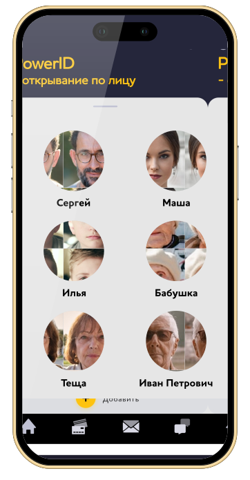

Возможности умных функций
в мобильном приложении «Мой POWERNET»

Распознование лиц
Сам откроет дверь подъезда, ключ не нужен.
Каждый раз, когда вы открываете ключом -
домофон вас сфотографирует.
Как добавить лицо для распознования?
Умный домофон > PowerID > Добавить.
Чтобы домофон открывал быстрее - добавляйте
свои фото в кепке, в солнечных очках, ночью.